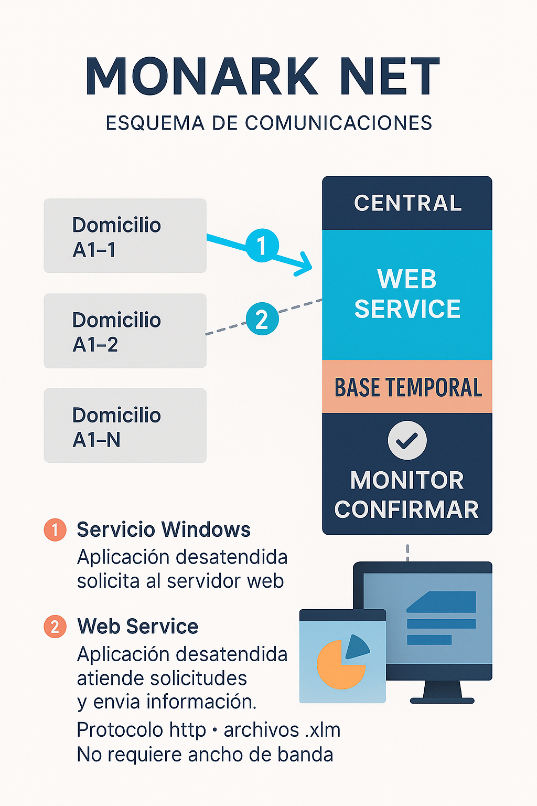

Sistemas MONARK
Monark es el sistema contable desarrollado por Morch. Ofrece una solución poderosa, flexible y moderna para la gestión de empresas, adaptándose a distintas industrias con un diseño técnico y evolutivo.
Sé nuestro partner
Conviértete en partner del sistema Monark y accedé a oportunidades exclusivas. Presentá la solución a nuevos clientes dentro de rubros específicos, expandiendo tu red comercial con una herramienta contable moderna, flexible y robusta. Nuestro programa de partners está diseñado para integradores, asesores y expertos que buscan sumar valor y generar ingresos adicionales.
Prueba por 30 días nuestros sistemas
Requisitos Previos
– Windows 7 o posterior (64 bits)
Droguerías
• Circuito encadenado de Pedido – Remito – Factura
• Factura electrónica automática
• Trazabilidad, conexión con ANMAT
• Stock individualizado
• Actualización de productos desde bases Kairos
• Gestión de entregas, Hojas de Ruta, Monitor para visualizar el estado de las entregas
Sistema Web con registro de las farmacias
Integración con Cuentas Corrientes, Bancos, Impuestos y Contabilidad
Impresión de cheques, gestión de pago a proveedores, estadísticas de ventas
Adaptación a los cambios propios del negocio
Balances y Reportes
Generación de balances, reportes contables y financieros en tiempo real para una toma de decisiones efectiva.
POS (Punto de Venta)
Sistema ágil para ventas en mostrador, con control de stock y caja.
Cuentas Corrientes

Gestión integral de cuentas corrientes de clientes y proveedores con historial y alertas.
Franquicias y Sucursales

Monark Centralizador
Ventas en locales y centralización de la información
Gestión de venta al público con ticket fiscal
Pantalla de venta rápida con lectora de código de barras
Venta por unidades, peso o servicios
Conexión con balanzas
Control de Stock
Cierre de Caja
Administración de valores
Cuentas Corrientes de deudores
Estadísticas de ventas por hora o rango de fechas
Centralizador
Un sistema centralizador recibirá datos de cada sucursal. En este sistema, podrá ver la info completa o de las sucursales que usted seleccione. A cada usuario se le designan las sucursales con las que puede operar. Los datos se reciben por medio de archivos .xlm mediante cualquier conexión de Internet.
Compras
Ingreso y control de órdenes de compra, recepción y actualización de stock.
Producción
Planificación, seguimiento y control de órdenes de producción y materias primas.
Estadísticas
Análisis visual de la información para medir desempeño y detectar oportunidades.
Instalar Monark + SQL Server

Este instalador incluye:
- Monark ERP
- SQL Server Express 2014
- Framework .NET 4.8
Uso recomendado:
- Para instalaciones nuevas sin SQL Server
Pasos:
1. Descargar el instalador desde www.monark.com.ar
2. Ejecutar como administrador
3. Seguir las instrucciones para instalar Monark y SQL
El sistema quedará instalado con una base de datos de ejemplo y listo para configurar.